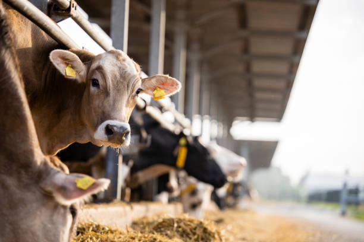

Nuestra Razón de Ser
En Lácteos Don Joaquín, nuestra misión es ofrecer productos lácteos de la más alta calidad, elaborados con técnicas tradicionales y el máximo cuidado. Con más de 30 años de experiencia, mantenemos el compromiso de llevar a su mesa el auténtico sabor de los lácteos artesanales, respetando los procesos naturales y garantizando la frescura en cada uno de nuestros productos.
